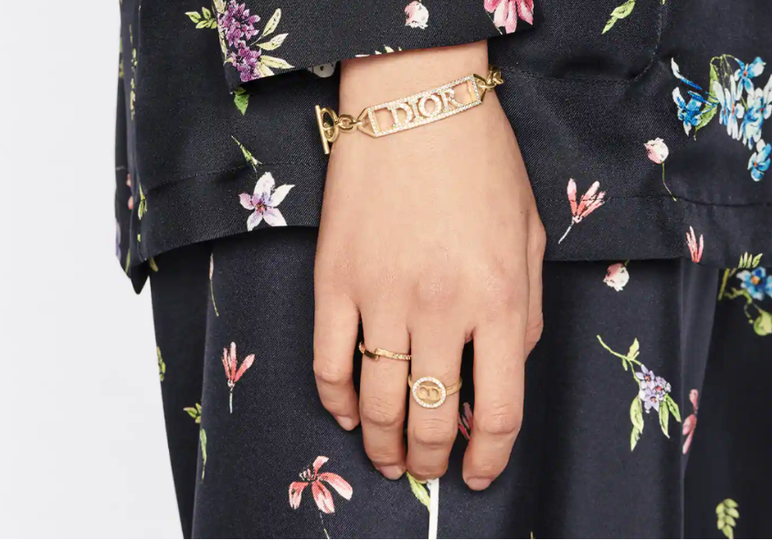
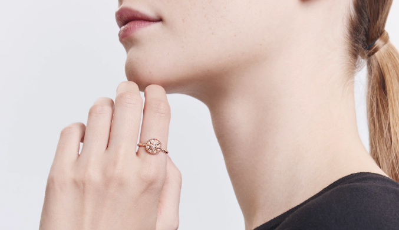

MIMIROSE RING
18K White Gold with a Diamond
Mimirose, die neue Schmuckkollektion von Victoire de Castellane, feiert das zwanzigjährige Bestehen von Dior Joaillerie. Sie ist eine Neuinterpretation von Mimioui mit seiner raffinierten Natur und seinen Edelsteinen und von Rose des Vents mit seiner zarten Körnung, die jeden Stein ziert.
CLAIR D LUNE RING
Metall mit Gold-Finish und Kristalle in Silber
Der Clair D Lune Ring ist zeitlos und elegant zugleich. Der schmale Metallstyle mit Gold-Finish besticht durch seinen „CD“-Schriftzug mit zarter Umrandung aus silberfarben reflektierenden Kristallen. Der modisch raffinierte Ring passt ideal zu weiteren Kreationen aus der Clair D Lune Linie.

PETIT CD RING SET
Gold Metal und Weisse Kristalle
Das moderne Ringset Petit CD zeichnet sich durch sein asymmetrisches und schlankes Design aus. Einer der Ringe zeichnet sich durch goldfarbene Metallglieder aus, die mit dem Schriftzug "CD" verziert sind, während der andere ein Pavé aus weißen Kristallen aufweist und mit gepunzten Sternen verziert ist. Das moderne und elegante Ringset lässt sich mit anderen Kreationen der Linie Petit CD kombinieren

ROSE DES VENTS RING
ROSE DES VENTS RING Roségold und Diamanten
Victoire de Castellane bietet eine neue Interpretation des Glückssterns von Herrn Dior in Form einer Windrose, einem achtzackigen Stern, an. 18 Karat Roségold Diamanten (0,09 ct*) Durchmesser des Motivs: 10 mm / 0,4 Zoll